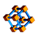

Macro Connect And Sweep |
| Description |
|---|
| This macro easily creates a connection between two objects. |
| Author |
| Mario52 |
| Links |
| Macros recipes How to install macros How to customize toolbars |
| Version |
| 00.04 |
| Date last modification |
| 2017-02-22 |
Description
This macro easily creates a connection between two objects, an object and a point or between two points (the center of the objects are the starting and ending points of the sweep) can be selected form a configurable ellipse polygon circle
Use
Run the macro select your objects or points choice the form and parameters and click Create.
Images
These files must be copied to your macros directory
(For download : Click Right button op the image and click "Save Image as ...")
The icon for the toolbar 
Script
Macro_Connect_And_Sweep.FCMacro
Download the macro to Gits Macro_Connect_And_Sweep.FCMacro
Example
Path and tubing with Macro_Connect_And_Sweep and Macro_Repro_Wire 
The sweep to work
Select the two points choice your form, settings and execute the sweep

Repeat the operation if needed

{kind=link}
{kind=link}
{kind=link}
{kind=link}
{kind=link}
{kind=link}
{kind=link}
{kind=link}
{kind=link}
{kind=link}
select the border of cylinder and run the Macro_Repro_Wire

{kind=link}
the circle is created activate the Sweep tools

{kind=link}
Select the circle the path and execute the sweep
{kind=link}
Easy ?
{kind=link}
Version
00.04 22/02/2017 : upgrade the search path
00.03 15/09/2016 : add create pipe
00.02 13/06/2016 : add options choice angle path rectangle and ellipse
00.01 07/06/2016 : add option solid or not centring rectangle or not
00.00 05/06/2016 :
Links
The forum discussion Scripting point to point tubing
This macro is based to the microelly2 code see Looking for some helpful GUI-commands